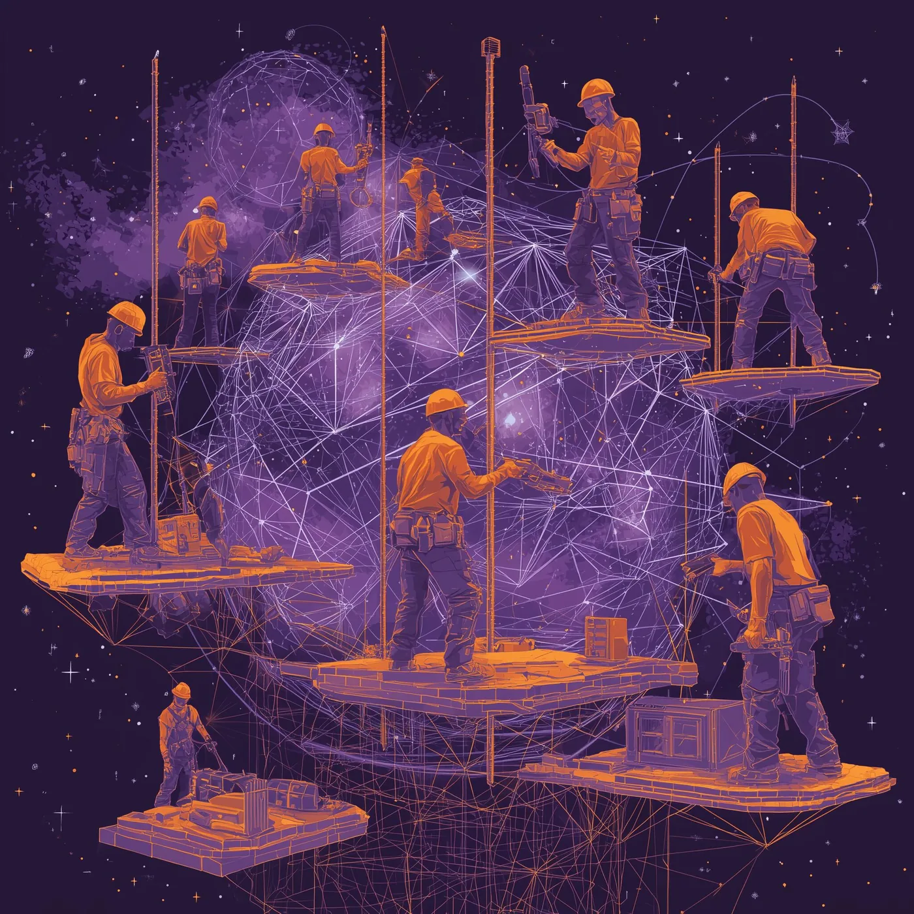

Voices from the Nostr Trenches: A Developer Survey
What Nostr developers actually struggle with: survey results from 10 builders in the trenches.

In July, I asked developers to tell me about their experience building on Nostr. I hoped to uncover difficult debugging problems, then use this to inform what tools I should add to DVMDash - a monitoring and debugging tool for API-like services running on Nostr. Across ten thoughtful responses from experienced builders, one challenge emerged louder than any other: the steep climb of understanding Nostr’s core protocols themselves – the NIPs. This wasn’t about missing tools. It was about deciphering the foundation, distinguishing between docs and live implementations, and dealing with Nostr’s growing pains. Before sharing what else I learned, I want to sincerely thank these ten developers who generously shared their time and insights. Here’s what their collective experience reveals about building on Nostr today.
Demographics
So who shared their stories? These aren’t weekend experimenters. Of the ten developers, six have been building on Nostr for over two years – true veterans. Another three have 1-2 years under their belts. Only one was relatively new (6-12 months). This is a community investing real resources, too: eight out of ten spend between $26 to $500 monthly on relay hosting, tools, and infrastructure.
Their toolkits reveal two trends: near-universal adoption of AI assistants (Claude and Cursor lead the pack) and wildly diverse technical approaches. Languages spanned JavaScript/TypeScript to Haskell, while development environments ranged from ‘vibes with windsurf’ to self-described ‘enterprise setups’.
What are they building with these tools? Forget clones of existing apps. A full 70% described wildly experimental ‘Other Stuff’ – from healthcare systems and decentralized CRMs to Web-of-Trust services, file storage solutions, and publishing platforms like Layer3.Press. The rest focused on social clients, chat apps, or core infrastructure like relays and SDKs.
Now on to the survey results!
Q1: What originally attracted you to Nostr?
Answers clustered around three themes: - Freedom: Three developers cited censorship resistance as foundational. ‘Nobody tells me what to do” one stated. - Simplicity: Others highlighted the protocol’s openness. ‘It’s freeing to solve problems without writing centralized server components,’ noted a respondent. - Opportunity: The rest saw untapped potential, like executing ‘An idea I had in 2017 that couldn’t be built then but could be using nostr’ – often leveraging cryptographic keys for decentralized user accounts and Lightning for payment integrations.
Q2: What do you love most about developing on Nostr?
The responses ranged from pure excitement to brutal honesty:
The Enthusiasts:
🗣️ “It’s just balls out crazy. everyone is just doing shit and seeing what happens and its great.”
🗣️ “I never worked on decentralized systems before, so I have no comparison, but it’s a lot more fun than working for some regular company, I can definitely say that.”
Where corporate tech numbs, Nostr ignites.
The Technical Appeal:
🗣️ “Its simplicity and openness. The ability to solve problems without writing centralized server components.”
A recurring theme: protocol minimalism enabling maximal creativity.
🗣️ “How fast and easy it is to spin up a client”
No backend? No problem. Just connect to relays and go.
The Freedom Factor:
🗣️ “App lives and works forever and doesn’t get shut down when companies decide to kill it.”
Anti-fragility as a core feature, not an afterthought.
🗣️ “Great technology and people, everyone is mission oriented on freedom tech”
A rare alignment of tools and tribe.
The Honest Take:
🗣️ “I don’t love this at all, there’s no real documentation, it’s constant pain.”
Q3: What’s your biggest ‘wow this is cool’ moment?
Devs were consistently impressed by Nostr’s technical elegance. One was shocked at how simple it was to analyze complex follow-lists. Another dove deep into elliptic curve cryptography, emerging with newfound confidence in the network’s security. Others highlighted the unexpected speed of relays, delivering live data far quicker than anticipated.
For many, the biggest surprise was value transfer. They recognized that Lightning zaps weren’t just tips – zap receipts could power real payment processing systems. The ability to move value directly between users, without intermediaries or algorithms, felt revolutionary. Integrations like Cashu demonstrated clear potential for embedded eCash functionality within Nostr apps.
The deepest wins came from builder breakthroughs. Like crafting a custom npm library that ‘just worked’ on the first try proved Nostr’s developer-friendly design. Most exciting was stepping entirely outside conventional feed-based models – building discovery tools like keypub.coracle.social or ephemeral streams like zephyr.coracle.social. This freedom to redefine interaction, not just replicate it, was the ultimate “wow.”
Q4: What’s the most challenging part of building on Nostr right now?
These responses hit close to home. I’d wrestled with reverse-engineering DVM specs myself, but these developers revealed something bigger. The pain isn’t just unclear protocols – it’s a cascade effect where governance burnout bleeds into documentation voids, which then metastasizes into broken tools.
The epicenter? A NIP process in crisis. As one veteran put it:
🗣️ “The ability for the community to keep up with spec writing and implementation is breaking down. Maintainers of the nips repo are burned out, and non-maintainers are not motivated to contribute.”
This isn’t mere frustration – it’s community-wide fatigue. When maintainers hit walls, progress stalls in ways that ripple through the stack. Another builder lamented the collateral damage:
🗣️ “Fighting with people about protocol changes and the way the NIPs repo works”
and
🗣️ “Bad libraries full of bugs, poorly written. Also, the bikeshedding in the nips protocol”
Imagine trying to build a house while the blueprint committee argues in real-time – that’s the reality of navigating NIPs today.
Without clear specs, documentation becomes folklore. Developers described scavenging for answers:
🗣️ “Documentation, lack of community knowledge, lack of tools with a tangible process to obtain an end result”
The absence of definitive sources forces builders into detective work, where one developer summarized the exhaustion:
🗣️ “The myriad of tools and updates that keep coming out, hard to keep track of what is up to date, also a direction of how NIPs are evolving”
It’s not just missing manuals – it’s chasing a target that keeps shifting.
Tooling suffers most visibly. When specs shift and docs vanish, libraries crumble, with complaints from devs like:
🗣️ “No libraries available, write everything from scratch”
and
🗣️ “Bad libraries full of bugs, poorly written”
These aren’t complaints – they’re the realities of building early. Developers spend weeks creating foundational tools that future builders won’t have to.
The final blow hits users and wallets. How do you onboard someone onto a fragmented ecosystem? How do you monetize when value flows peer-to-peer? One founder articulated the existential squeeze:
🗣️ “Creating an onboarding experience is hard because it’s very different from regular apps… Monetization strategies are difficult to come up with.”
The protocol’s radical freedom becomes its business Achilles’ heel – a reminder that even the most elegant tech stumbles without sustainable models.
Q5: How do you debug? What tools do you use?
How do these developers actually debug? The answers reveal a spectrum from pure intuition to custom infrastructure:
🗣️ “You know me … things break .... I usually just vibe code it. usually get it figured out. just takes time.”
and
🗣️ “I am not a debugger guy. I don’t use debuggers or special tools, I just read source code and think.”
These developers embody a DIY ethos, relying on intuition and deep code familiarity rather than formal tools. But not everyone operates purely on instinct. Many leverage standard development environments:
🗣️ “Debugger, claude, console.log”
🗣️ “Browser dev mode lol”
🗣️ “I used vs code and windsurf, I also just manually debug old skool using log debug statements”
For these builders, the classics never go out of style. Console logs and browser dev tools remain staples, augmented by modern AI assistants like Claude. When standard approaches fall short, however, the community’s self-reliance shines through in custom solutions:
🗣️ “Mostly I write custom python scripts to pull data from relays, or even run my own relays”
and
🗣️ “I look at the network tab to see if it’s my problem or someone else’s… If the problem is the relay, I clone the project and do the same there.”
Q6: How do you currently monitor what’s happening with your Nostr application in production?
I expected to hear about monitoring dashboards and alerting systems. Instead, I discovered a community with fundamentally different approaches to production monitoring.
On one end, some developers actively reject monitoring because it’s unnecessary for their product to function reliably: ‘I don’t, it’s 100% open source and it’s not my goal to track any users. I cannot monitor my users at all’. Others are building custom solutions: ‘build my own code to do so’. And in between, there’s everything from ‘monitor? that’s a thing?’ to traditional tools they ‘mostly don’t pay attention to.’
This isn’t just different architecture. It’s a different culture. Many builders create static or serverless client applications. Critically, the existence of relays as core infrastructure often renders traditional server-side components – and thus traditional monitoring – redundant. Furthermore, the decentralized, privacy-first ethos actively conflicts with the ‘monitor everything’ mindset common in centralized services.
Q7: Did you ever abandon a Nostr project? If so, why?
The path of a Nostr builder isn’t always linear. When I asked developers about abandoned projects, the answers split cleanly down the middle – half had never walked away, half had stories of projects left behind. But the ‘why’ behind those departures revealed the raw friction points of building on a frontier protocol.
For those who answered ‘yes,’ the reasons clustered around three core struggles:
-
The Perils of ‘Vibe Coding’: Several developers described hitting a wall when passion outpaced structure. “Many times,” admitted one. “The biggest reason is vibe coding — I have a good idea, get 80% of the way there, and then it collapses under its own weight. This is a complete waste of time.” The initial spark fizzled when faced with the grind of turning a prototype into something robust.
-
The Harsh Light of Market Reality: Even the most elegant code needs users. Others discovered their brilliant solution either lacked an audience or had already been built – and possibly better. “yes and only because it wasn’t that interesting for other ppl and or useful,” shared another. “half the time someones already built the same thing and its probably better.” This wasn’t just technical failure; it was a collision with the ecosystem’s nascent, yet rapidly evolving, landscape.
-
The Sybil & Incentive Trap: Perhaps the most fascinating challenge emerged: designing systems resilient against bad actors without sacrificing decentralization. One developer abandoned an ambitious Q&A platform with bounties not just over payment mechanics, but the fundamental difficulty of aligning incentives: “yes, i wanted to make a stack overflow with bounties but couldn’t figure out how payments would work while keeping it decentralized and disincentivizing bad actors.” This highlights the thorny challenge of building anti-gaming mechanisms into trustless environments – a hurdle unique to decentralized ecosystems.
Contrasting this was a powerful counter-narrative: persistence. While some projects were abandoned, others were merely paused, weathered, or rebuilt. “I’ve been working on one code base for almost 4 years,” stated a veteran, embodying this resilience. “I’ve taken many breaks after crashing out.” Their story highlights a crucial truth: in Nostr’s experimental crucible, abandonment isn’t always the end – sometimes, it’s just a pit stop on a much longer journey.
Q8: What would need to exist for you to confidently build your next Nostr app?
The ‘I’ve already got what I need’ veterans:
🗣️ “Nothing for me since I’ve been around the space since 2021.”
🗣️ “Right now … not much … GitHub Pages for hosting, Netlify for services, Postman for testing posts. I’m on top of it, got it figured out.”
🗣️ “Nothing, I build the requirements myself.”
Why it matters – developers who have been building on Nostr for years have already assembled a personal toolchain, so they don’t feel the pain of missing libraries.
The Blocked Devs saying ‘I need better tooling’:
🗣️ “NIP documentation, library examples, articles on how to solve basic fetching. This alone keeps 90+% of devs away.”
🗣️ “A library or an SDK that manages subscriptions to Nostr relays would be good.”
🗣️ “I just wish there were better libraries (go‑nostr is bad man).”
Why it matters – clear, up‑to‑date specs and a solid SDK would shave weeks off a dev’s timeline and lower the barrier for newcomers.
The Visionaries Focusing on What over How:
🗣️ “A better understanding of how to create social media that is aligned with human flourishing. ‘What’ is much harder than ‘how.’”
Why it matters – even with perfect docs and libraries, builders still wrestle with the bigger question: are we recreating Twitter on a relay network, or redefining social interaction for a decentralized world?
Q9: What tools would make developers most productive?
When asked which developer tools would help them most, respondents sent a clear signal about the ecosystem’s biggest pain point:
- Documentation/discovery platform (5 votes)
- Protocol testing/validation tools (4 votes)
- Real-time event monitoring/debugging (3 votes)
- Relay performance analytics (3 votes)
- Integration testing tools (3 votes)
Documentation emerged as the top priority—not debugging tools, not monitoring dashboards, not even testing frameworks. This is telling. These aren’t junior developers asking for tutorials; these are experienced engineers who can navigate complex codebases by instinct. When veterans identify documentation as their top need, it reveals something fundamental: the protocol specifications themselves have become the development bottleneck.
The second-place finish for protocol testing/validation tools reinforces this theme—developers don’t just need to understand the NIPs, they need ways to verify their implementations (and others) actually conform to spec. The remaining tools (monitoring, analytics, integration testing) all tied for third, suggesting that once developers can understand and validate against the protocol, the other tooling needs become equally manageable.
The message is unmistakable: fix the documentation problem first, and you’ll unlock developer productivity across the board.
Q10: Anything else you think Nostr developers need?
I ended the survey with an open-ended question, hoping for additional insights. What I got was validation of everything that came before. Even when given a blank canvas to discuss any need, developers circled back to the same fundamental issue. One response captured it succinctly:
🗣️ “Better NIP understanding ....”
The Systemic Reality: But another response revealed why this problem persists despite being so widely recognized:
🗣️ “A decentralized nips repository with a working system for social consensus. This is not an easy task, and requires a deep understanding of human nature and political systems.”
This cuts to the heart of the challenge. Nostr’s decentralized nature—its greatest strength—makes coordinating protocol improvements inherently political rather than purely technical.
The Takeaway
After surveying ten experienced Nostr developers – most building for 2+ years – one truth emerged louder than any debugging problem or missing tool: the protocol documentation crisis is Nostr’s biggest bottleneck.
Here’s the paradox: Nostr’s greatest strength is its greatest weakness. Decentralization frees builders but coordination becomes the hidden tax. While developers love the freedom to build without permission and the thrill of frontier experimentation, they’re exhausted from reverse-engineering specs, fighting through governance debates, and reinventing wheels that proper documentation could have prevented.
The path forward isn’t just about better tools – it’s about solving human coordination in a decentralized system. As one developer put it, we’re not just debugging code, we’re debugging consensus itself.
What’s your take? If you’re building on Nostr, what’s your biggest friction point? Is it the NIPs documentation, the tooling, or something else entirely? And for those who’ve walked away from projects – what would bring you back? Drop your thoughts below – whether you’re a two-year veteran or just getting started, I’d love to hear how your experience compares to these findings.
Maybe your abandoned project is exactly what someone else needs to see. Maybe your workaround is someone’s breakthrough. Let’s compare notes.
Acknowledgements
Thank you again to all the devs that responded to the survey. Thank you to npub1qu7dsd44275lm…gs7p98 for a great UI to see / export data, and the notifications that alerted me when new submissions were received. DVMDash continues to evolve based on these insights—you can find it at https://stats.dvmdash.live/